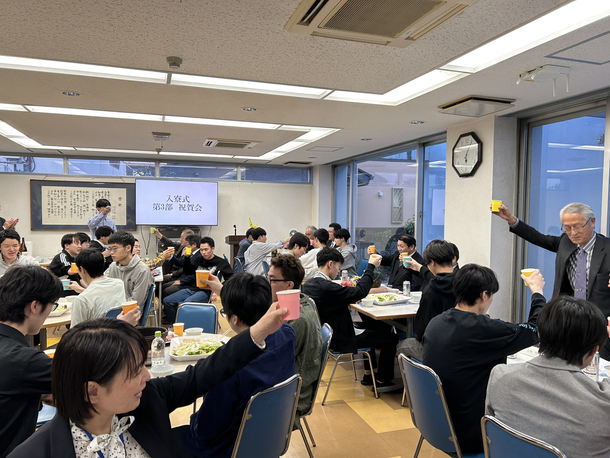
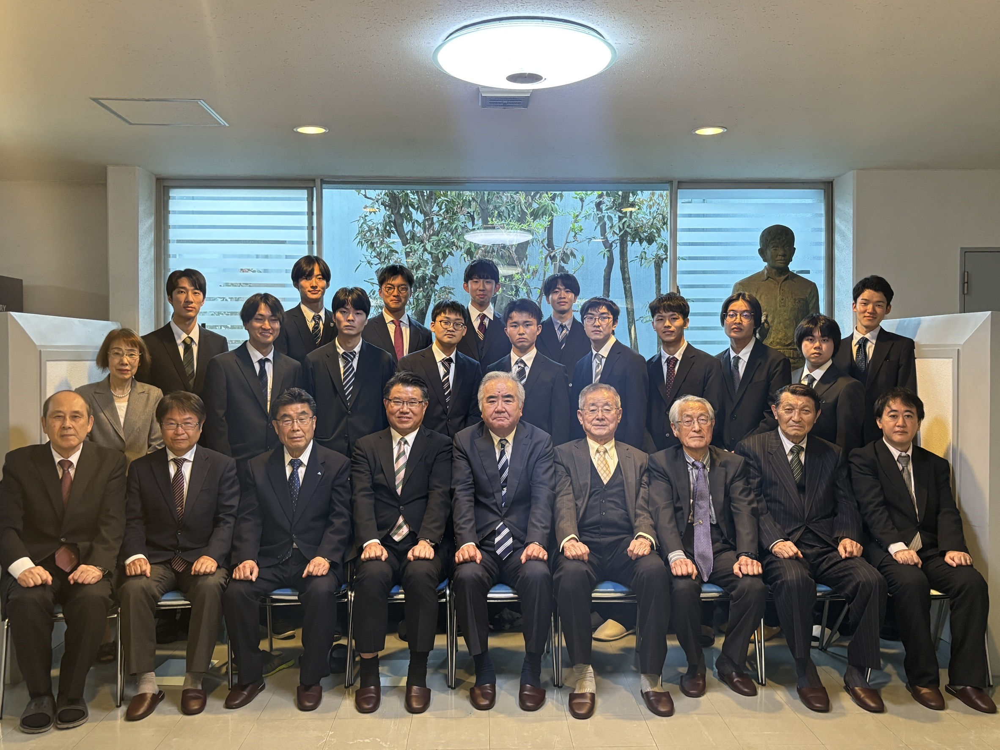
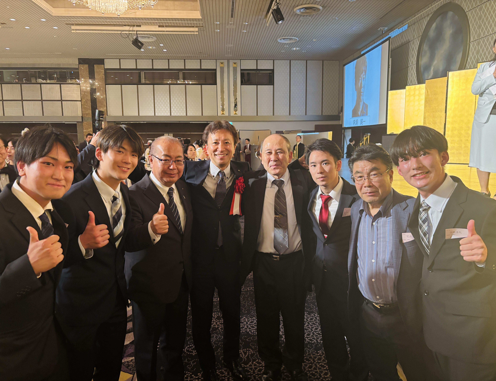
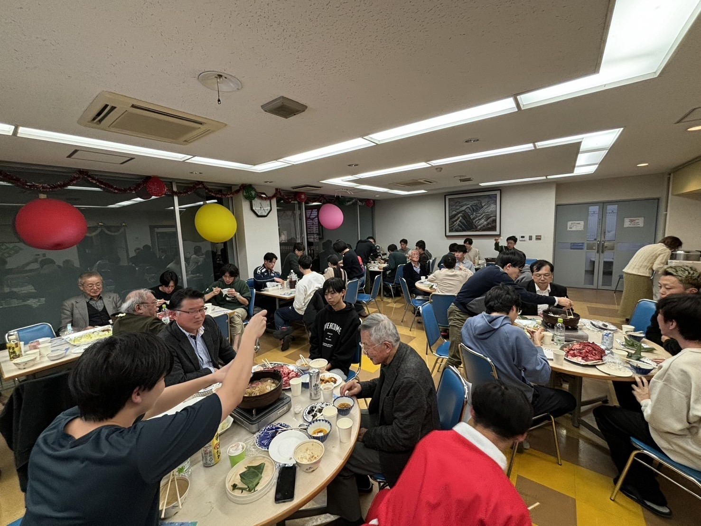

For Students
上京直後に顔見知りと相談先をつくる
入寮式や歓迎会を通じて、生活の最初の時期に人間関係を立ち上げやすくします。
Dorm Life Design
青雲寮の年間行事は、イベントを増やすためではなく、上京直後の孤立を防ぎ、先輩やOB、保護者、地域とつながる接点をつくるために組まれています。雰囲気の良さだけでなく、生活が立ち上がる流れとしてご覧ください。
行事の多さを見ていただくページではなく、どの時期に、誰と、どのような関係が生まれるのかを整理して、保護者の方や高校の先生にも判断しやすい形にまとめています。

For Students
入寮式や歓迎会を通じて、生活の最初の時期に人間関係を立ち上げやすくします。
For Parents
保護者会など家族との接点が一年の中にあり、離れていても状況を共有しやすい流れがあります。
For Schools
先輩・OB・地域とのつながりを持ちながら、東京での学生生活を継続しやすい環境です。
Year Flow
新入寮生を迎え、寮生活のスタートを全体で共有する節目です。最初の顔合わせと、生活の切り替えの起点になります。
入寮直後の緊張が落ち着く時期に、寮生同士が自然に会話できる場をつくり、生活の不安をほどいていきます。
寮の環境を整える活動と、同郷の先輩方との交流を通じて、生活の場と人のつながりの両方を育てる時期です。
日常に近い交流機会を重ねることで、学年を超えた関係や、気軽に相談しやすい空気をつくります。
保護者の方に寮生活の様子をお伝えし、家族と寮の接点を保つ機会です。本人だけでなく、ご家族にも状況を共有しやすくします。
1年を振り返りながら、寮生・OB・関係者が集まる大きな節目です。年内の関係を結び直し、次の学期へ向かう区切りになります。
学生生活の中の大きな節目を寮で共有し、成長の過程を周囲とともに祝う機会です。生活の場が単なる住まい以上の意味を持つことが伝わります。
卒寮生を送り出しつつ、チームで取り組む機会を持つことで、寮生活の締めくくりと次の世代への引き継ぎにつなげます。
Three Themes
01 Welcome
入寮式と新入寮生歓迎会は、最初の数週間で人間関係を立ち上げるための行事です。最初に話しかけやすい相手ができることは、生活リズムや学業の立ち上がりにも影響します。
新しい生活の始まりを寮全体で共有する
同級生や先輩と自然に会話しやすくする
最初の相談先を作りやすくし、孤立を防ぐ

02 Connect
県人会や市友会、青雲会との交流は、同郷の先輩やOBと接点を持てる機会です。暮らしや進路の相談相手が寮内だけに閉じないことは、地方から上京する学生にとって大きな支えになります。
同郷の先輩やOBと接点を持てるようにする
県人会・市友会・青雲会へ関係が広がる
寮の外にも相談先がある状態をつくる

03 Mark
寮祭、二十歳を祝う会、府中駅伝大会は、1年の中に節目をつくる行事です。保護者会も含め、本人だけでなく周囲とともに節目を共有できることが、寮生活の安心感につながります。
一年の区切りと節目を寮全体で共有する
寮生・保護者・地域との関係を結び直す
住まいに時間のリズムと成長の実感をつくる

For Parents & Schools
このページで見ていただきたいのは、行事の数ではなく、上京直後から年度末まで接点が切れないことです。新入寮生を迎える機会、保護者とつながる機会、OBや同郷の先輩と会う機会、節目を共有する機会が一年の中に配置されています。
行事ページだけで判断するよりも、生活・費用・募集情報と合わせて見ると、寮の実態がつかみやすくなります。高校の先生が紹介する場合も、下の導線をセットで見ていただくのが適しています。